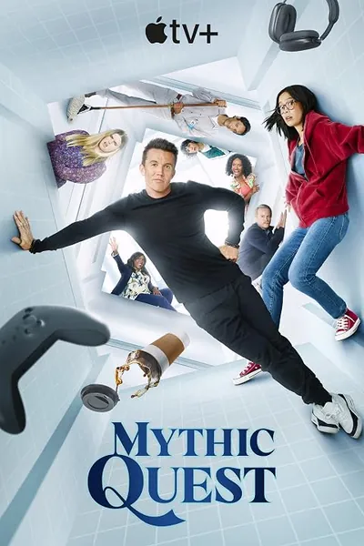

Сериал · 2020 · Комедия
Ситком о студии, разрабатывающей крупнейшую MMORPG: эксцентричный создатель-геймплея, продюсер, который реально всё держит, тестировщики в подвале и монетизация, которая ломает геймплей. Редко кто снимал «геймдев» изнутри: релизы, обновления, конфликт творчества и метрик, вечное «мы поправим в следующем патче». Отдельно хороша серия-притча о карантине — снятая удалённо и получившая награды.
A sitcom about a studio building the biggest MMORPG: an eccentric creator, a producer who actually holds everything together, testers in the basement, and monetization that breaks gameplay. Rarely has game dev been filmed from inside: releases, patches, the conflict of creativity and metrics, and the eternal 'we will fix it in the next update'. The quarantine episode — shot remotely and award-winning — is a special highlight.
← Вернуться в каталог IT Movies